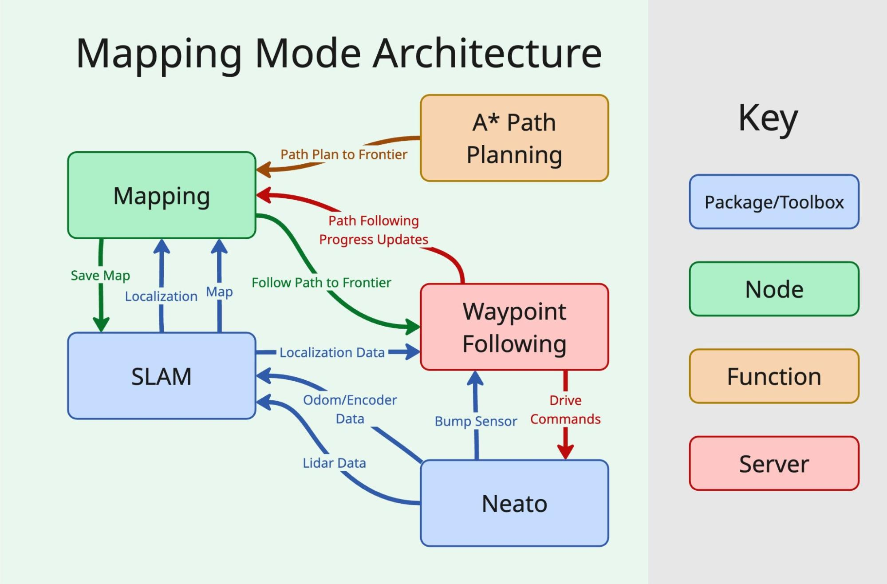

Mapping
In the mapping mode, the robot explores and creates a 2D LIDAR SLAM map of its environment for the cleaning mode to use. It does this by taking in the existing partial SLAM map of the environment and finding the best 'frontier' between empty and unexplored space based on distance from the robot and its value for exploration. The robot iteratively travels to this point and finds new points to travel to until the map is filled and can be saved.

Architecture
This is a program flow diagram for the main mapping node and its dependencies. The mapping node handles the overall flow of the program and algorithm and calls the necessary methods. The SLAM algorithm, in this case the ROS SLAM toolbox, handles the generation and saving of the map, and the odometry localization on the map being generated. The A* path planning function is used to see if points are accessible by the robot, and if so, how to get there. The waypoint following node follows the path to the next frontier and gives feedback to the mapping node. It also handles unexpected obstacles in the path.
Algorithm

The general algorithm used by the mapping node works as follows:
- Start with the initial 2D LIDAR map grid
- Create a list of points on the most recent map grid with unexplored space where the robot can physically be
- Weight these points based on an ideal distance away from the robot and the percentage of unexplored vs. empty space in the area around them
- Sort the list of points by weight, including some randomness
- Select the first point in the list that is accessible by the robot, according to A*, and request the waypoint server to travel to that point
- Wait until the robot has almost reached the next waypoint or the waypoint following fails
- If no frontiers are found or accessible, save the map and end the mapping node
- Otherwise, return to step 2
Limitations and Future Work
There are many optimizations and improvements to be made to the mapping node. Firstly, the mapping node assumes a static environment; a different implementation of SLAM could be used to account for people and pets. The mapping node could also take into account the bump sensor; some obstacles cannot be seen by the LIDAR even if the robot cannot get over them. These challenges would also necessitate improvements to the decision to save the map, as the whole map might not appear explored even if the robot could not reach certain areas.
The frontier selection could also be made more efficient, taking a machine learning-based approach to ranking frontiers rather than simple heuristics like distance. It might also make sense to be able to change the path planning during execution if it is more efficient to do so, rather than waiting to reach the previously sent frontier before reevaluating its goal.